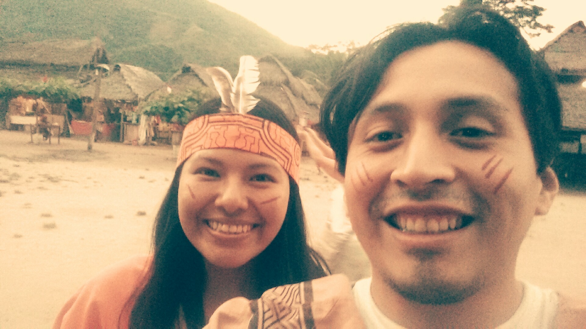
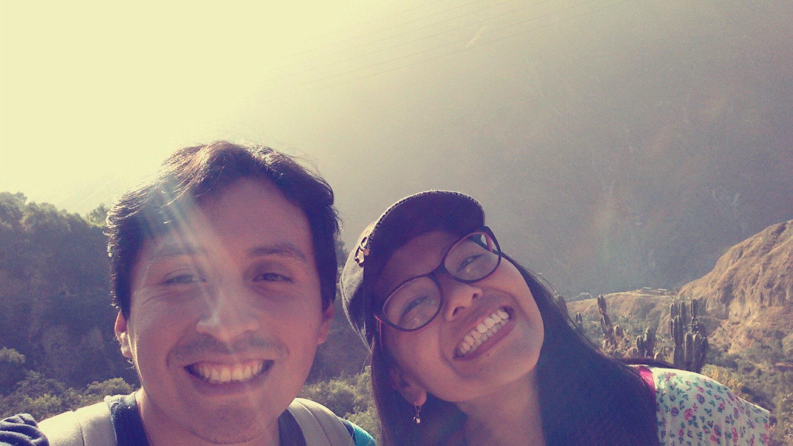

Lo vi perdido en un evento universitario. La vi hambrienta en un campamento.
Algunos recuerdos

Fuimos de paseo con la Granjita a la selva. Estamos en la comunidad de Panchamichi, donde te sacan la ... Luego regresamos en una combi, donde nos calificaron de ser tan "uiu! uiu!" (2017)

Paseo a San Jerónimo de Surco, Chosica. Dias antes del primer viaje largo a Brasil. Llegamos a la catarata donde nos tomamos más fotos. Respirabamos esperanza, exhalabamos melancolía (2017)
En nuestro paseo con la Granjita. Foto sobre una roca. (2017)
Frases
El matrimonio es para dejar de ser egoístas y aprender a pensar en el otro (Enero, 2018).
La dificultad hace que la vida sea eso, vida, porque nos ayuda a crecer (Enero, 2018).
Palabras para ti, mi Sara
Después de todo este tiempo, me siento demasiado agradecido a Dios por tí. Por mucho he sido ingrato, desatento, desconsiderado, frío, torpe, tosco, etc. ... en fin, insuficiente para alcanzar la altura de un chico para ti. Me pongo a pensar y estoy seguro que mereces alguien mucho mejor que yo. Y por eso te agradezco, porque siendo así yo, me has querido, me has amado. Guardo todos los buenos recuerdos en mi corazón como mi mayor tesoro. Aunque existieron momentos difíciles, los momentos félices fueron muchísimos, y de maneras que no me esperaba. Te convertiste en mi mejor amiga, mi apoyo, mi confidente, la que escuchaba mis tonterías, mi respuesta, mi milagro, mi motivación. Despiertas en mi al Josué que siempre quiero ser, alguién con esperanza, alguien que pinta y corta, alguien que cobra fuerzas cuando no tiene ninguna, alguien que anda feliz, que puede ser generoso. Tu espíritu es tan hermoso. Me enamoré de tí. Sin embargo, al verme, me he dado cuenta que por ahí existe alguien, mejor que yo para tí. Alguién que te hará bien, mucho bien. Te ayudará a crecer en las áreas que más quieres. Sabrá expresarse correctamente. Será capaz de ver como tu ves. No omitirá ni supondrá nada. Tendrá mucha consideración por tí. Siendo así la situación, sólo te puedo decir que eres la mejor para mi en todo sentido. Pedirte entonces que, como quien pide sin merecer, me brindes tu amistad, al ritmo que tu quieras, al nivel que mejor desees. Será el mejor regalo de cumpleaños que me hayan dado. Te lo pido como quien corre a ver el ocaso, sabiendo que pronto sólo las estrellas iluminarán su cielo. Te lo pido porque será como balzamo a mi alma. Perdóname y regalame la promesa de una amistad, tal vez no para hoy, pero si eterna. Te amo.